채널: This Is The World | 길이: 42:24 | 날짜: 2024-11-16
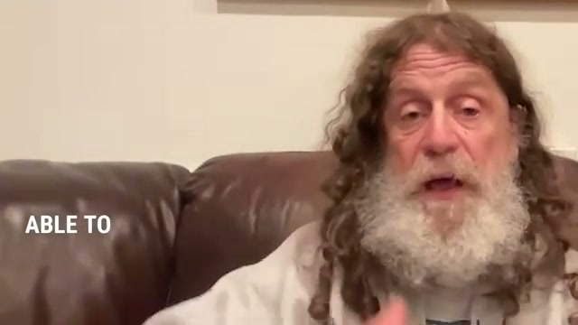
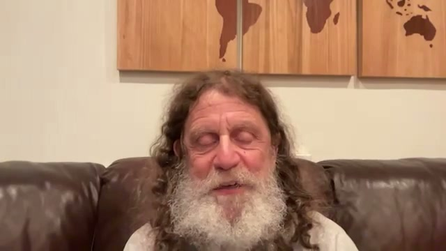
영상의 첫머리에서 사폴스키는 가장 도발적인 문장을 먼저 던진다. “자유의지가 정말 없다고 믿는다면, 누구를 비난하거나 처벌하는 일은 결코 말이 되지 않는다”는 선언은 이후 40분 넘는 대화 전체의 축이 된다. 그는 인간을 “생물학적 기계”라고 반복해서 부르며, 현재의 나는 내가 통제할 수 없었던 생물학적 역사와 환경적 상호작용의 총합일 뿐이라고 정의한다. 이때 자유의지를 부정한다고 해서 인간을 단순화하는 것이 아니라, 인간이 얼마나 복잡한 기계인지 강조하는 방식으로 논의를 시작한다.
시각적으로도 도입부는 이 주장의 밀도를 뒷받침한다. 화면은 로버트 사폴스키의 얼굴과 손동작을 크게 잡는 전형적 원격 인터뷰 구도이며, 갈색 가죽 소파와 뒤편의 목재 세계지도 장식이 반복 배경으로 등장한다. segment_000 좌하단에는 잘린 영어 자막 일부인 ABLE TO가 보이는데, 이는 초반 편집이 발화의 임팩트를 즉시 강조하려는 방식임을 보여 준다. 별도 그래프나 도표 없이 표정, 시선, 제스처만으로 논박을 밀어붙이는 구성이다.
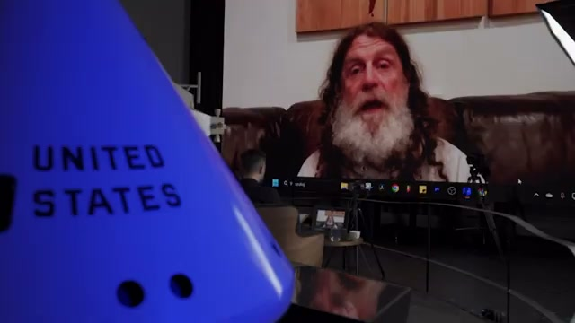
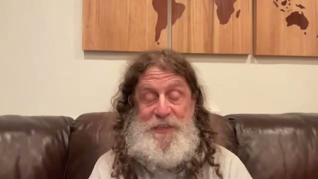
진행자가 “자유의지가 아니라면 무엇이 인간을 인간답게 만드는가”라고 묻자, 사폴스키는 인간의 특수성을 다른 곳에서 찾는다. 인간은 자신이 생물학적 기계임을 아는 영장류이며, 자신이 언젠가 죽는다는 사실을 아는 포유류이며, 지구 반대편 사람의 고통을 느낄 수 있는 동물이라는 것이다. 그는 인간을 “아주 특이한 동물”이라고 부르지만, 그 특이함은 초월적 영혼이나 비물질적 의지에서 오지 않는다. 오히려 메타 인지, 죽음 인식, 원거리 공감이라는 생물학적 능력의 확장에서 나온다고 본다.
이 구간은 사폴스키가 손을 크게 쓰며 설명하는 장면이 중심이다. segment_002와 segment_003은 모두 소파 정면 클로즈업이지만, 손의 위치와 표정이 달라 논의가 추상 개념에서 점점 체계적 설명으로 들어가고 있음을 시각적으로 보여 준다. 별도의 시각 자료는 없고, 질문-대답의 압축된 리듬이 곧 영상의 구조다.
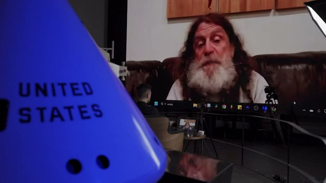
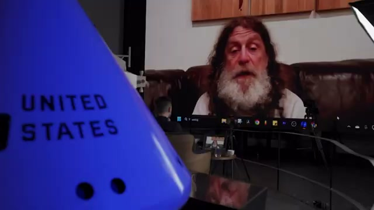
이 영상에서 가장 중요한 설명 중 하나는 “왜 그 행동을 했는가?”라는 질문에 대한 다층적 답변이다. 사폴스키는 먼저 반 초 전 뇌의 특정 부위 상태를 말하지만, 곧 직전 1~2분의 감각 자극, 그날 아침의 호르몬 수준, 최근 수개월·수년간의 트라우마·사랑·우울·자극 경험, 청소년기의 뇌 구성, 아동기, 태아기, 유전자, 조상 문화, 그 문화를 만든 생태, 종 진화까지 층위를 확장한다. 즉 어떤 행동도 단일 원인이나 “순간적 의지”로 환원될 수 없고, 시간적으로 엄청나게 두꺼운 인과 사슬 위에서 발생한다는 것이다. 그래서 그는 “그 모든 조각을 합치면, 과거로부터 자유로운 행동이 들어갈 장소는 없다”고 말한다.
시각적으로 segment_004와 segment_005는 인터뷰 현장의 메타 장면을 보여 준다. 파란 로켓형 오브제 전면에 UNITED STATES라는 텍스트가 크게 보이고, 뒤의 대형 모니터에는 사폴스키의 얼굴이 화상 인터페이스 하단 아이콘과 함께 나타난다. 오른쪽에는 소프트박스 조명, 하단에는 카메라 삼각대와 반사되는 테이블이 보여, 이 인터뷰가 “사고 실험”이 아니라 실제 촬영·중계 환경 속에서 이루어지고 있음을 드러낸다. 그러나 그 어떤 외부 자료도 제시되지 않고, 오직 말의 구조만으로 인과론을 밀어붙이는 편집이다.
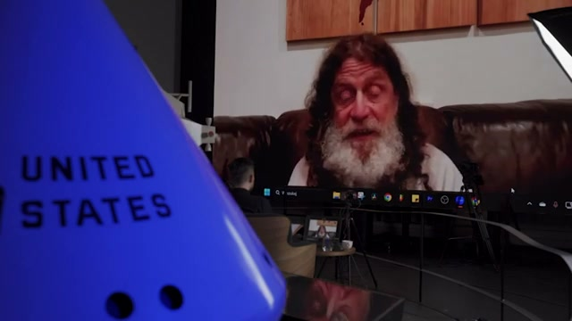
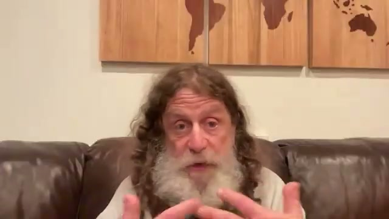
행동이 전적으로 선행 조건의 산물이라면, 그는 감옥도 “그 자체로 정당한 처벌”이 될 수 없다고 본다. 더 나아가 누군가를 칭찬하고 보상하는 일도 근본에서는 동일하게 문제적이다. COVID 치료제를 만든 사람조차 “남보다 더 많은 배려와 자원을 받을 자격이 있는 훌륭한 인간”이라고 부를 수 없으며, 그저 그런 종류의 사람이 “되어 버린” 것뿐이라는 것이 그의 입장이다. 그래서 그는 감옥뿐 아니라 CEO가 노동자보다 10배 급여를 받는 현실도 함께 비판한다. 응보와 능력주의는 모두 “자격”의 언어를 공유하기 때문이다.
segment_006과 segment_007 역시 모니터를 통해 잡힌 사폴스키를 보여 주는데, 화면 내 화면 구성이 묘하게 그의 주장을 시각화한다. 인간은 스스로를 직접 보는 존재가 아니라, 매개 장치를 통해 자신을 해석하는 존재라는 인상을 준다. 파란 오브제의 UNITED STATES 글자는 이 논의가 미국 사형제, 능력주의, 형벌 체계를 겨냥하고 있음을 시각적으로도 계속 환기한다.
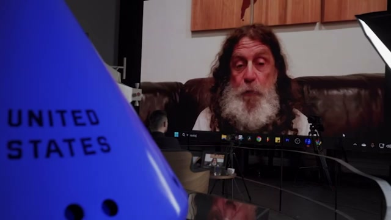
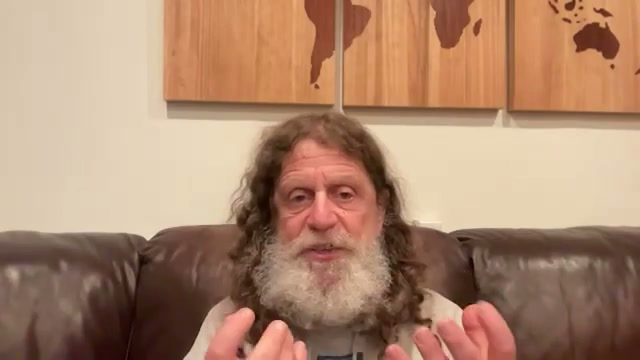
사폴스키는 위험한 사람을 다루는 방식을 “브레이크가 고장 난 자동차” 비유로 설명한다. 그런 차는 위험하므로 차고에 넣고 운행을 막아야 하지만, 그렇다고 매일 망치로 지붕을 두드리며 “썩은 영혼”을 응징하지는 않는다. 인간도 마찬가지로, 사회를 해칠 위험이 있으면 격리·통제·치료가 필요하지만, 그 사람의 악한 본질을 전제로 도덕적 복수심을 투사하는 것은 부당하다는 것이다. 그는 “해로운 인간은 해로워질 때까지 이미 손상된 인간이었다”고 말하며, 인종차별·외국인 혐오·극단적 악행도 생물학과 환경의 상호작용 속에서 나온다고 본다.
segment_008은 사폴스키의 손 제스처가 크게 보이는 클로즈업이고, segment_009는 정면에서 차분히 설명하는 화면이다. 배경은 계속 같은 갈색 소파와 목재 세계지도다. 영상은 자동차 사진이나 교도소 사진을 삽입하지 않는다. 대신 발화자의 손동작과 얼굴 근육의 강조를 통해 비유의 선명함을 살린다.
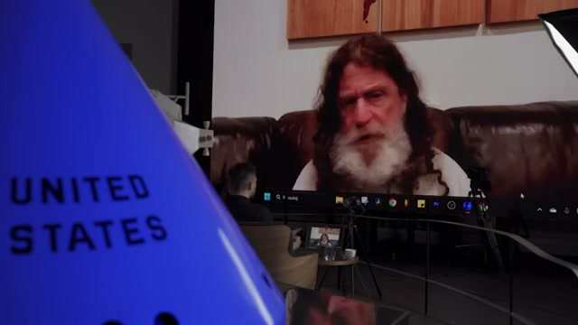
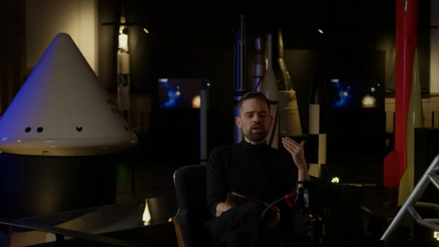
미국 일부 주의 사형제 법에서 IQ가 70 미만이면 처형할 수 없다는 사례는, 사폴스키에게 자유의지 논리가 얼마나 임의적인지 보여 주는 상징적 장면이다. 법은 저 IQ 피고인에게는 “옳고 그름을 배울 충분한 뇌 기능을 갖지 못한 것이 본인 잘못이 아니다”라고 말한다. 그렇다면 IQ 71은 어떻게 갑자기 의지와 책임, 도덕적 자격을 획득하느냐는 것이 그의 핵심 질문이다. 그는 저지능, 뇌손상 사례가 단지 자유의지 부재를 “쉽게 볼 수 있는” 경우일 뿐이고, 사실 나머지 사람들도 무수한 작은 원인들의 조합으로 형성된 존재라고 본다.
이 부분에서 segment_011은 드물게 진행자를 정면으로 보여 준다. 검은 옷을 입은 진행자는 어두운 스튜디오 같은 공간에 앉아 있고, 뒤에는 우주 전시장처럼 보이는 로켓형 구조물과 빛나는 화면들이 배치되어 있다. 영상은 질문자의 리액션을 통해 대담의 호흡을 만든다. 사폴스키의 클로즈업과 진행자의 어두운 세트가 교차되며, 논의가 철학적이면서도 실제 제도 문제를 겨냥하고 있음을 강조한다.
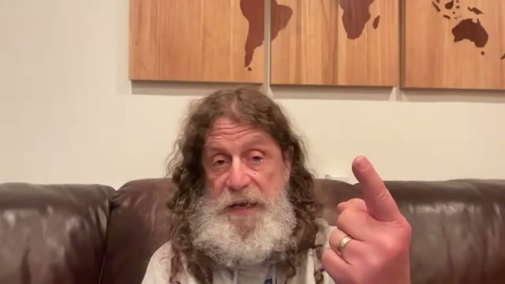
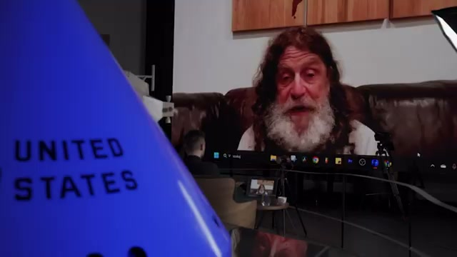
사폴스키는 태아기 환경을 자유의지 부정의 강력한 사례로 제시한다. 미국에서 태아 알코올 증후군 진단이 있는 사람은 행동 조절 능력에 문제가 생길 수 있는데, 그 원인은 임신 5개월 무렵 자궁 안에서 벌어진 일이지 당사자의 선택이 아니다. 그는 이런 논리가 나쁜 행동에만 해당하는 것이 아니라, 극단적으로 좋은 행동에도 똑같이 적용된다고 강조한다. 스탠퍼드에는 좌석 하나에 30명 이상이 지원하고, 캠퍼스 2마일 거리에는 카운티 교도소가 있는데, 임신 중 약물 노출, 어린 시절 피아노 교육, 가정폭력, 부모의 자장가, 집의 책과 음식, 귀갓길 폭행 위험 같은 지표들을 나열하면 누가 강의실에 있고 누가 감옥에 있을지 95% 정도 예측할 수 있다고 말한다.
이 대목의 화면은 사폴스키가 손가락을 세며 원인을 카운트하는 동작을 보여 준다. segment_012는 손가락 하나를 들어 포인트를 명시하는 순간을 포착하고 있고, segment_013은 다시 촬영 현장의 모니터 컷으로 전환된다. 화면 안에 별도 표나 수치 그래픽은 없지만, 오히려 그 부재 때문에 “30 대 1”, “2마일”, “95%” 같은 숫자가 언어적으로 더 강하게 들린다.
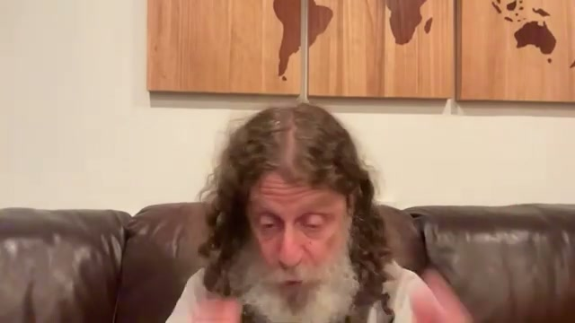
사람들이 자유의지를 가장 실감하는 장면은 두 가지 아이스크림 맛 중 하나를 고르거나, 어떤 중요한 행동을 하기로 마음먹는 순간이다. 우리는 의식을 갖고 있고, 대안도 알고 있고, 결과도 대충 예상하며, 무엇보다 “다르게 할 수도 있었다”고 느낀다. 사폴스키는 სწორედ 그 지점이 착시가 가장 강한 지점이라고 본다. 중요한 것은 그 순간의 의식 그 자체가 아니라, 왜 그 순간 초콜릿을 고르려는 종류의 의도를 가진 사람이 되었는가이며, 그 의도 역시 이전 역사와 독립적이지 않다는 것이다.
segment_014와 segment_015는 모두 사폴스키의 표정 변화가 비교적 부드럽게 잡힌다. 그는 여기서 상대방의 상식적 직관을 인정한 뒤, 질문의 틀을 바꿔 버리는 방식으로 설득한다. 화면은 여전히 소파, 목재 지도, 따뜻한 조명 외에는 별다른 시각 자료가 없지만, 바로 그 단순함이 “내가 당연히 자유롭게 고른다고 느끼는 순간”을 청자가 자기 경험으로 떠올리게 한다.
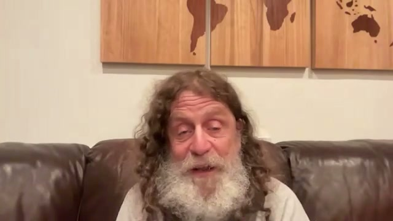
사폴스키는 자유의지를 “의도를 형성하고 행동하는 순간 자신이 자유 행위자라고 믿는 허위 신념”으로 정의한다. 역경을 이겨낸 사람 안에서 어떤 마법 같은 핵심을 본다거나, 뇌가 행동을 산출하면서도 그 자신의 역사로부터 완전히 독립돼 있다고 생각하는 태도 역시 같은 종류의 신비화로 본다. 그는 “자유의지가 없다는 걸 증명해 보라”는 요구가 논리적으로 부적절하다고 지적하면서도, 단지 논리학에서 멈추지 않는다. 이제는 충분한 신경생물학적 지식을 갖고 있으니, 자유의지가 있다고 믿는 쪽이 오히려 신경전달물질, 혈중 호르몬, 태아기 사건, 유년기 경험이 모두 달라져도 같은 행동이 어떻게 유지되는지 보여 달라고 요구해야 한다는 것이다.
segment_016은 사폴스키가 비교적 शांत한 표정으로 설명하는 장면이다. 화려한 인포그래픽 대신 얼굴의 정적과 문장의 압박으로 논증하는 스타일이 유지된다. 이 구간은 전체 인터뷰에서 철학적 논제와 과학적 논거가 직접 맞물리는 전환점이다.
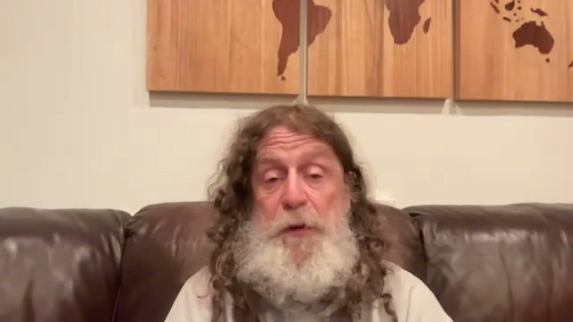
그는 자유의지 부재를 단일 실험 하나로 “증명”하려 하지는 않는다. 대신 약물을 투여하면 특정 행동 경향이 바뀌고, 암컷 포유류가 배란 주기의 특정 시점에 있을 때 어떤 행동이 늘어나며, 태아기 기아를 겪은 사람은 성인 비만 가능성이 약 20배 커지고, 특정 유전자와 특정 성장 환경의 조합이 폭력성 위험을 30배 높일 수 있다는 식의 사례들이 이미 산처럼 쌓여 있다고 말한다. 즉 우리가 뇌와 행동의 종속성을 보여 주는 사실을 너무 많이 알고 있기 때문에, 자유의지는 더 이상 “기본 가정”이 아니라 “추가 입증이 필요한 가설”이 된다. 이 구간은 그가 과학을 자유의지 부정의 직접 증명이 아니라, 자유의지 독립성 가설을 약화시키는 압도적 간접 증거로 쓰고 있음을 잘 보여 준다.
segment_017은 사폴스키의 정면 클로즈업이다. 별도 차트는 없지만, 이 장면의 힘은 오히려 수치와 사례를 차례로 쌓는 말의 형식에서 나온다. 영상은 계속 일관되게, 말을 대신해 줄 시각 자료를 거의 추가하지 않는다.
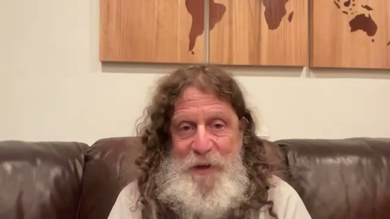
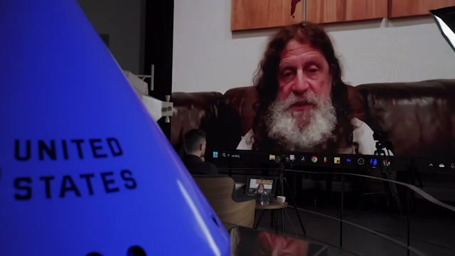
사폴스키는 동물에게도 자유의지가 없느냐는 질문에 “정확히 그렇다”고 답한다. 인간은 벌레, 원숭이, 나무와 같은 재료로 된 생물학적 기계이며, 단지 매우 흥미롭고 복잡한 기계일 뿐이라는 것이다. 그는 바다민달팽이 유전자를 쥐에 넣어도 작동하고, 인간이 학습할 때 쓰는 효소를 오징어에 넣어도 학습에 도움을 준다고 말하며, 현미경 아래 놓인 인간 뉴런과 파리 뉴런은 구분하기 힘들다고까지 말한다. 인간과 동물의 차이는 재료가 아니라 수량과 복잡도이며, 충분한 양이 쌓이면 질적 차이가 생긴다는 “quantity invents quality” 논리가 이 구간의 핵심이다.
또 그는 침팬지 뇌가 인간 뇌의 3분의 1 수준이라고 말하면서, 만약 침팬지에게 뉴런이 지금보다 3배 더 많다면 신학, 미학, 경제 시스템, 철학, 오페라 같은 것까지 만들었을 것이라고 상상한다. 이 상상은 인간을 특별하게 만드는 것은 초월적 자유의지가 아니라, 같은 부품의 대규모 조합이라는 점을 강조하기 위한 것이다. segment_018과 segment_019는 실제로는 양자 논의 구간이지만, 화면상으로는 여전히 동일한 인터뷰 구도라서, 이 영상이 인간-동물 연속성을 말할 때도 별도 도해 없이 언어적 상상력에 의존하고 있음을 보여 준다.
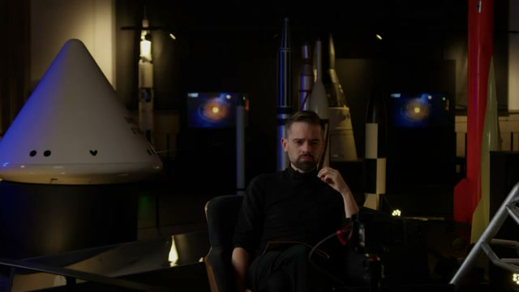
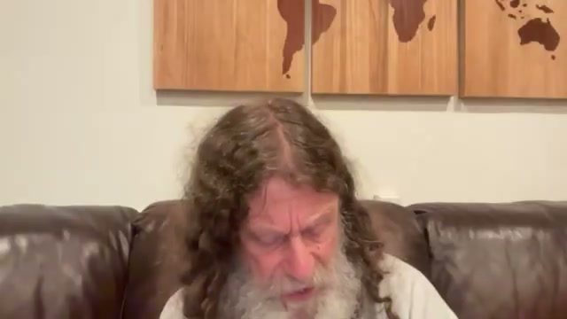
사폴스키는 “우리는 인간 뇌가 어떻게 작동하는지 세부적으로 거의 모르지 않느냐”는 반론을 정면으로 받는다. 그는 이에 대해, 우리가 안다고 생각하는 것의 90%가 지난 25년 동안 배운 것이고, 그중 25%는 훗날 틀린 것으로 드러날 수도 있다고 솔직히 인정한다. 그러나 뇌를 완전히 모른다는 사실은 “그래서 자유의지가 있을지도 모른다”는 결론으로 곧장 이어지지 않는다. 오히려 지금까지 드러난 것만으로도 뇌가 역사로부터 독립적으로 작동한다는 주장보다는, 역사에 의해 강하게 구속된다는 주장이 훨씬 설득력 있다고 본다.
그는 아주 일상적인 예로 카페인을 든다. 매일 아침 어마어마한 수, 어쩌면 10억에서 20억 명쯤 되는 성인이 커피를 마시며 각성, 감각 역치, 숫자 기억 폭 같은 기능을 바꾼다. 이것만으로도 우리는 매일 “인간이 생물학적 기계”임을 실천적으로 증명하고 있다는 것이다. 또 빈곤과 스트레스 속에서 자란 사람은 부유하게 자란 사람보다 행동을 적절히 통제하지 못하는 상황에 놓일 가능성이 30배 높아질 수 있다고 말하며, 뇌의 스트레스 처리 회로 자체가 환경에 의해 달라진다고 설명한다.
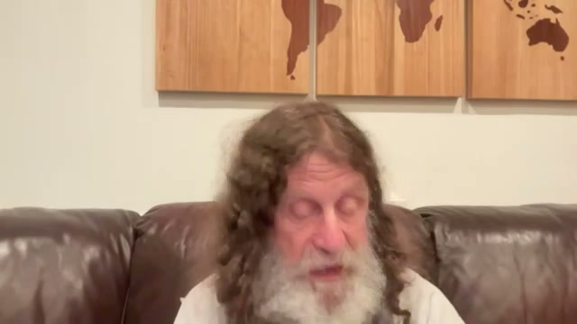
진행자는 현대 물리학의 비대칭성, 비결정성, 카오스가 자유의지의 여지를 열지 않느냐고 묻는다. 사폴스키는 먼저, 아원자 수준에서 결정론·인과성·시간의 화살이 무너진다고 보는 물리학자들이 상당수 있으며, 그 점 자체는 매우 흥미롭다고 인정한다. 그러나 핵심 질문은 그 양자적 비결정성이 “단 하나의 뉴런” 기능에 영향을 미칠 정도로 거시 수준까지 올라오느냐는 것이다. 그는 MIT의 수학자이자 물리학자인 맥스 테그마크를 언급하며, 양자 사건이 뉴런 안 분자 하나의 진동에 영향을 미치려면 23차수, 즉 1 뒤에 0이 23개 붙는 규모의 스케일 상승이 필요하다고 말한다.
그는 이어 양자 자유의지론에 세 가지 반박을 제시한다. 첫째, 그것은 수학적으로 사실상 불가능에 가깝다. 둘째, 설령 가능하다 해도 그것이 만들어 내는 것은 “자유로운 의지”가 아니라 “무작위 행동”이며, 우리가 자유의지라고 부르는 것은 일관된 도덕 나침반이지 랜덤 노이즈가 아니라는 점이다. 셋째, 양자 비결정성을 높은 수준의 의식이 “아래로 손을 뻗어” 활용할 수 있다고 말하는 학자들의 신경생물학은, 일부는 사기꾼 같고 일부는 노벨상 수상자라 해도, 아이들 이야기 수준으로 비일관적이라고 그는 비판한다.
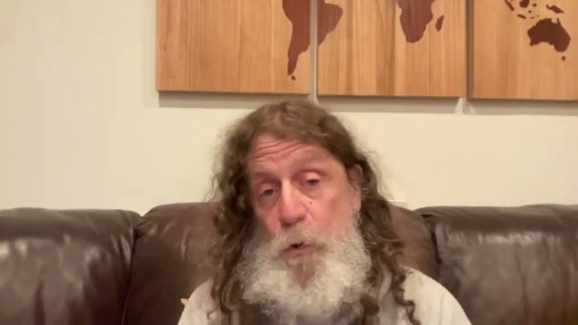
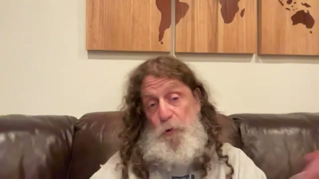
카오스 이론에 대해서도 그는 명확한 구분을 한다. 누군가 “그럼 빅뱅 2분 후에 이미 내일 아침 메뉴까지 다 정해졌다는 말이냐”고 묻지만, 사폴스키는 미래가 그렇게 단순하게 “예측 가능”하다고 말하지 않는다. 나비효과와 민감한 초기조건 때문에 미래는 어떤 해상도에서는 영원히 예측 불가능할 수 있으며, 그는 심지어 어떤 현상은 소수점 이하 4000자리 수준의 차이 때문에 절대 예측할 수 없다고 말한다. 그러나 예측 불가능성은 비결정성과 동일하지 않다. 어떤 일이 일어나기 전에는 예측할 수 없어도, 일단 일어나고 나면 그 역시 결정된 현상이었을 수 있다는 것이 그의 요점이다.
의식에 대해서는 더 조심스럽다. 그는 자신이 의식을 충분히 이해하지 못하며, 의식을 섬세하게 논하는 철학자들의 글도 잘 이해하지 못한다고 고백한다. 그래서 오히려 그 문제에서 거리를 두는데, 그 이유는 의식의 존재 여부가 자유의지의 존재 여부와 별 관련이 없다고 보기 때문이다. 물고기는 의식이 없을지 몰라도 행동을 하고, 인간은 의식을 가진 종류의 신경계를 가졌을 뿐, 행동을 산출하는 밑바닥 메커니즘은 같은 생물학이라는 것이다.
이제 그는 사회적 수용 가능성의 문제로 넘어간다. 자신도 십대 때부터 이런 식으로 생각해 왔지만, 대부분의 시간에는 여전히 사람들이 자유의지를 가진 것처럼 느끼며, 판단·자격·당연함의 언어를 버리지 못한다고 솔직히 말한다. 그럼에도 역사적으로 우리는 “마녀가 날씨를 조종한다”는 믿음을 버렸고, 폭풍을 일으켰다고 늙은 여성을 화형에 처하는 일을 그만두었다. 간질도 악마 들림이 아니라 신경학적 질환으로 이해하게 되었고, 약을 먹고 일정 기간 발작이 없으면 운전할 수 있도록 제도화함으로써 안전과 비비난을 동시에 관리하게 되었다고 말한다.
그는 난독증 사례를 특히 길게 든다. 과거에는 글자를 뒤집어 읽는 아이를 멍청하고 게으르다고 불렀지만, 이제는 그것이 특정 피질 영역의 신경발달 문제라는 것을 알게 되었고, 그 결과 더 잘 가르칠 수 있게 되었으며 아이에게 “너는 게으르고 형편없는 사람”이라는 자아상을 주입하지 않게 되었다는 것이다. 더 넓게는 400년 전 계몽기 서유럽 다수에게 노예제가 자연스럽게 느껴졌을 것이고, 7살 아이가 공장에서 죽도록 일하는 것도 직관적으로 허용되었을지 모르지만, 이제는 그렇지 않다. 사폴스키는 이런 사례들을 “자유의지의 적용 범위를 역사적으로 조금씩 철회해 온 과정”으로 읽는다.
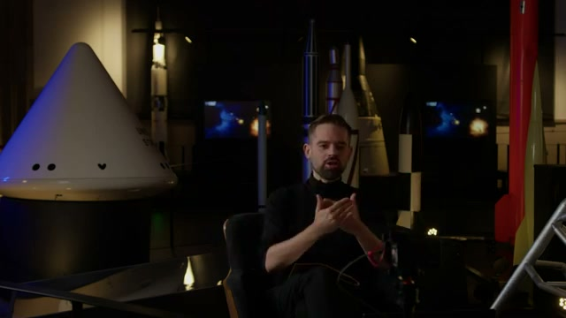
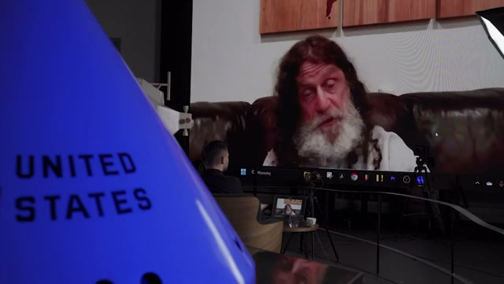
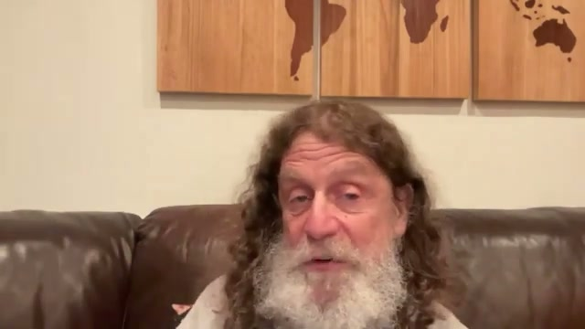
후반부에서 진행자는 비선형성과 우연, 예컨대 같은 초에 두 사람이 서로에게 전화를 거는 것 같은 드문 사건이 우리 몸 안에서도 자유의지 비슷한 효과를 만들 수 있지 않느냐고 묻는다. 사폴스키는 원리적으로 희귀한 확률적 사건은 가능하다고 답한다. 예를 들어 혈액 응고 연쇄의 첫 효소는 매우 엄격한 피드백으로 조절되지만, 브라운 운동 수준의 무작위성 때문에 이론상으로는 3분 뒤 전신에 응고가 일어나 거대한 혈전이 될 수도 있다는 것이다. 그는 그런 일은 생물 역사상 한 번도 없었을 법하지만 “가능성” 자체는 인정하면서도, 그런 희귀 사건은 “이 사람은 나쁜 사람이라 자유를 박탈해야 한다”거나 “저 사람은 좋은 사람이라 더 좋은 음식과 의료, 돈을 받아야 한다”는 도덕적 판단과는 별 관련이 없다고 선을 긋는다.
마지막 질문은 AI다. 여기서 그는 거의 유일하게 강한 인식적 겸손을 보인다. 자신은 그 영역에 매우 무지하며, 컴퓨터 과학자이자 머신러닝을 하는 아들의 말을 빌려, 기분이 좋은 날에는 “AI에 업로드될 첫 불멸의 인간은 이미 살아 있다”고 하고, 기분이 나쁜 날에는 “20년 뒤 기계가 우리 모두를 파괴하고 탄소로 먹어 치울 것”이라고 한다고 전한다. 자신은 무지하기 때문에 두렵지만, 더 걱정되는 것은 정말 잘 아는 사람들 중 상당수가 매우 डर어하고 있다는 사실이며, 바로 그들의 경고를 진지하게 들어야 한다고 말하며 인터뷰를 끝낸다.
시각적으로 segment_026은 다시 진행자의 어두운 세트, segment_027은 UNITED STATES 오브제와 모니터가 있는 메타 촬영 컷, segment_028은 사폴스키의 마지막 클로즈업이다. 끝까지 그래프, 코드, 공식은 나오지 않는다. 대신 영상은 처음부터 끝까지 “말과 얼굴”만으로 거대한 철학적-과학적 논쟁을 끌고 간다.
“자유의지가 정말 없다고 믿는다면, 누구를 비난하거나 처벌하는 일은 결코 말이 되지 않는다.”
“우리는 생물학적 기계다. 엄청나게 복잡하지만, 결국 생물학적 기계다.”
“우리는 통제할 수 없었던 생물학적 역사와, 통제할 수 없었던 환경의 상호작용의 결과다.”
“왜 그 행동이 일어났는가를 묻는다면, 1초 전부터 100만 년 전까지의 모든 것을 함께 봐야 한다.”
“감옥이 말이 안 된다면, 회사 사장이 모두보다 10배 급여를 받는 것도 말이 안 된다.”
“위험한 사람으로부터 사회를 보호해야 한다. 하지만 그건 고장 난 브레이크의 자동차를 차고에 넣어 두는 것과 같은 문제다.”
“IQ가 70이면 책임이 없고 71이면 책임이 생긴다는 건 얼마나 터무니없는가.”
“중요한 건 그 순간 무엇을 의도했느냐가 아니라, 왜 그 순간 그런 의도를 갖는 사람이 되었느냐이다.”
“이제 질문은 ‘자유의지가 없음을 증명하라’가 아니라, ‘자유의지가 어떻게 작동하는지 보여 달라’가 되어야 한다.”
“예측 불가능한 것은 결정되지 않은 것과 다르다.”
“우리는 역사 속에서 반복해서 ‘아, 거기엔 자유의지가 없었구나’라고 깨달아 왔다.”
“내 무지 때문에 AI가 무섭다. 하지만 더 걱정되는 건 잘 아는 사람들 가운데도 많이 두려워하는 이들이 있다는 사실이다.”
사폴스키의 핵심 메시지는 단순하다. 인간 행동은 생물학, 환경, 발달, 문화, 역사, 우연의 복합 결과이며, 그 어디에도 과거로부터 독립된 “순수한 행위자”는 없다는 것이다. 따라서 형벌은 응보가 아니라 보호와 관리로, 공로는 찬양이 아니라 조건의 결과에 대한 이해로, 도덕 판단은 비난이 아니라 설명과 예방으로 재구성되어야 한다는 것이 그의 결론이다.
실용적 시사점도 분명하다. 첫째, 형사사법은 “벌받아 마땅함”보다 위험성 평가, 재활, 치료, 격리에 더 가까워져야 한다. 둘째, 교육과 복지는 개인의 게으름이나 자질 문제보다 태아기·유년기·빈곤·스트레스 같은 형성 조건을 다루는 방향으로 이동해야 한다. 셋째, 능력주의 사회는 성공을 순수 공로로, 실패를 순수 책임으로 보는 언어를 줄여야 한다. 넷째, 양자역학, 카오스, 의식 같은 난해한 개념은 자유의지의 피난처가 아니라 오히려 문제를 더 엄밀하게 분리해 사고하게 만드는 도구여야 한다.
향후 전망에 대해 그는 낙관도 비관도 단정하지 않는다. 인간은 직관적으로 계속 자유의지를 믿고 싶어 할 것이며, 사폴스키 자신도 그 직관에서 완전히 벗어나지 못한다고 말한다. 그러나 마녀, 간질, 난독증, 노예제처럼 과거에 “도덕적 दोष”로 보던 것을 점차 조건과 기제로 이해하게 된 역사적 사례를 볼 때, 자유의지 역시 앞으로 더 좁은 영역으로 밀려날 가능성이 있다. 이 영상은 결국 “자유의지가 있느냐”보다 “그 믿음이 어떤 제도와 감정을 정당화해 왔느냐”를 다시 묻게 만든다.
댓글
GitHub 이슈 기반 댓글 시스템입니다.